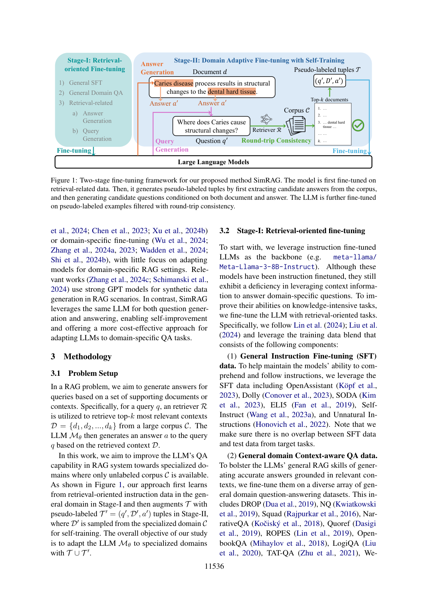
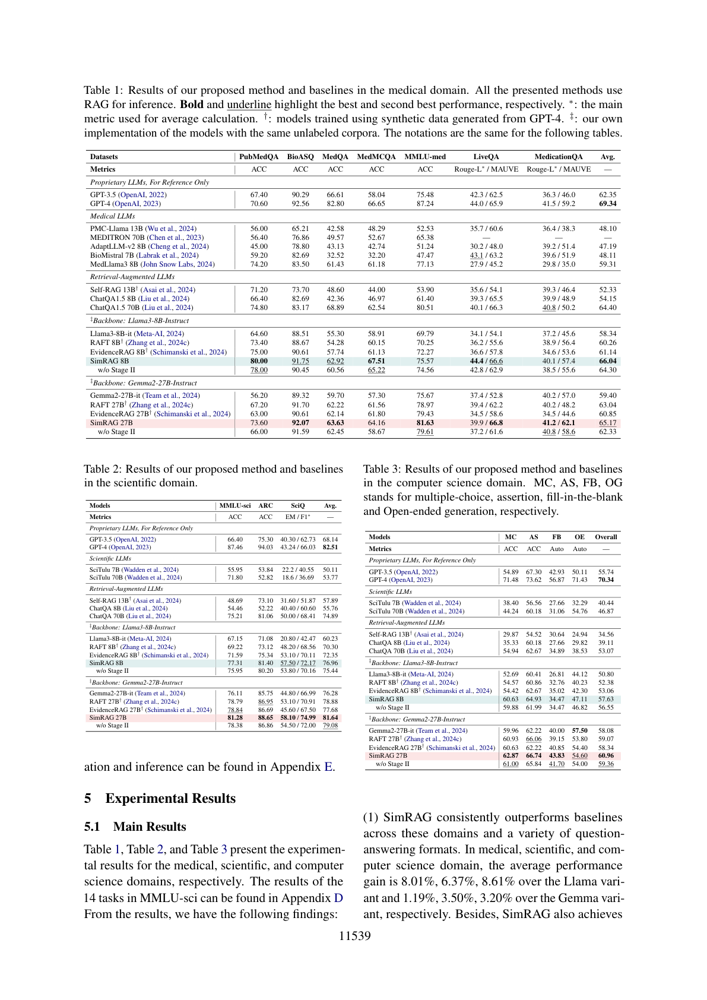
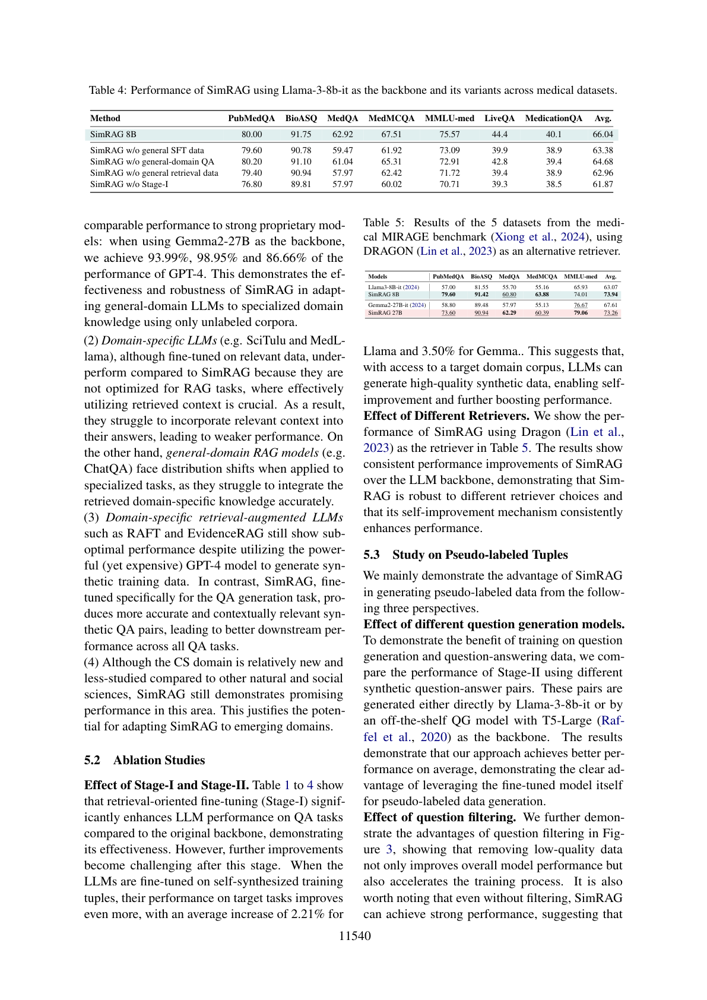
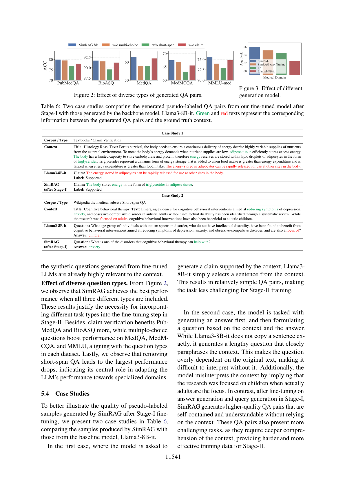

让单一 LLM 同时具备「基于上下文的问答」与「基于上下文的提问」能力，通过自训练在仅有无标注语料下实现领域自适应
检索增强生成（RAG）通过整合外部知识来增强大语言模型（LLM）的问答（QA）能力。然而，由于分布偏移（distribution shift）以及领域特定数据获取困难，将通用 RAG 系统适配到医学、科学等专用领域面临独特挑战。为此，我们提出 SimRAG，一种自训练方法，赋予 LLM 同时具备问答与提问的联合能力以实现领域自适应。我们的方法先在指令遵循、问答与检索相关数据上微调 LLM；随后提示同一 LLM 从非标注语料生成多样化的领域相关提问，并辅以过滤策略以保留高质量合成样本。借助这些自生成的合成样本，LLM 能提升其在领域特定 RAG 任务上的表现。在跨越两种骨干规模、三个领域的 11 个数据集上的实验表明，SimRAG 以 1.2%–8.6% 的优势超越基线。
检索增强生成（RAG）是一项强大技术，通过引入外部知识源来增强 LLM 在问答等知识密集型任务上的表现。该方法不仅针对长尾知识定制回复，还避免了昂贵模型重训的需要，并通过确保回复扎根于相关证据来减少幻觉，从而提升输出的整体准确性与可靠性。
尽管大量研究聚焦于为通用领域 QA 任务开发有效且高效的 RAG 系统，将 RAG 适配到 LLM 的专用领域仍面临重大挑战。这些模型常在分布偏移下挣扎，无法从领域特定上下文中准确抽取信息；此外，在专用领域直接使用黑盒 LLM 处理敏感专有数据会引发隐私担忧。要在专用领域释放基于 LLM 的 RAG 系统的全部潜力，必须在领域相关 QA 任务上微调 LLM。
尽管领域特定微调需求迫切，主要挑战在于获取面向 RAG 应用的高质量微调数据。先前工作依赖在专用语料上的持续预训练，或在领域特定指令微调数据上微调。但这些通用任务与领域 QA 之间的错配削弱了效果。近期若干方法用强 LLM（如 GPT-4）合成数据构建 QA 微调集，虽有前景，却昂贵、低效且缺乏对生成输出的显式质量控制；直接用黑盒 LLM 处理专有语料也引入隐私顾虑。
为应对上述数据稀缺问题，我们提出 SimRAG，一种自改进方法，利用 LLM 自身能力为领域自适应问答生成伪标注数据。我们的方法受自训练在 LLM 发展中的成功启发——模型用从非标注语料生成的合成样本精炼自身。但 RAG 应用需要特殊考量，以适配 LLM 去生成「需要外部上下文才能回答」的问题。SimRAG 的核心目标是微调单一 LLM 执行两个互补任务：基于上下文的问答与基于上下文的提问。两任务都涉及从上下文中抽取与摘要相关信息，从而能相互强化。
具体而言，我们设计两阶段流程来适配 LLM 做领域 QA：先在与指令遵循、问答、提问相关的通用领域数据上微调 LLM，使其具备基本的指令遵循与上下文利用能力；随后利用无标注领域语料，提示同一 LLM 生成扎根于这些专用领域上下文的高质量 QA 对。为进一步提升合成对质量，我们引入多种任务类型以增进泛化能力，并结合往返一致性过滤（round-trip consistency filtering）技术——仅当原始上下文在检索结果中位列前排时才保留生成的 QA 对。借助 LLM 生成的这些伪标注（问题, 段落, 答案）元组，我们持续用合成样本微调模型，使其逐步在合成对上精炼输出，从而自适应到领域特定 QA 应用。
我们在生物医学、自然/社会科学、计算机科学（CS）三个领域的实验观察到 SimRAG 持续优于其他领域特定 LLM 与通用领域检索增强 LM。定性研究凸显了问答与提问联合训练，以及多样化、去噪 QA 对的好处。贡献总结如下：
检索增强生成。RAG 已成为语言建模、问答等知识密集型 NLP 任务的有力工具。典型做法是将检索器与 LLM 生成器结合，并设计微调流程使检索器与 LLM 能力对齐。近期研究探索动态检索过程以精炼所取回内容的相关性、过滤无关上下文以鲁棒化 RAG，以及专门提升 LLM 搜索与 RAG 能力的指令微调方法。
自训练（Self-training）。自训练（或称伪标注）是最早的半监督学习方法之一，用教师模型在新标签上拟合学生模型，已被广泛用于文本分类、自然语言理解、排序等任务。近期自训练思想也被应用于 LLM 指令微调、推理与对齐。但其主要缺陷是对标签噪声敏感；已有样本选择与重加权等稳定策略。据我们所知，该流水线在 RAG 应用上尚未被广泛探索。
领域特定 LLM。多数领域特定 LLM 依赖持续预训练或领域特定微调，很少聚焦将模型适配到领域特定 RAG 设置。相关工作（Zhang et al., 2024c; Schimanski et al., 2024）在 RAG 场景用强 GPT 模型做合成数据生成。相比之下，SimRAG 同时用同一 LLM 做提问与回答，实现自改进，并为适配 LLM 到领域特定 QA 任务提供更经济的方法。
在 RAG 问题中，我们旨在基于一组支撑文档或上下文为查询生成答案。具体地，对查询 $q$，检索器 $\mathcal{R}$ 从大语料 $\mathcal{C}$ 中取回最相关的 top-$k$ 上下文 $D=\{d_1,d_2,\dots,d_k\}$；LLM $M_\theta$ 随后基于取回的上下文 $D$ 为查询 $q$ 生成答案 $a$。本工作旨在提升 LLM 在 RAG 系统中仅有非标注语料 $\mathcal{C}$ 可用的专用领域 QA 能力。如图 1，我们的方法先在阶段 I 从通用领域的检索导向指令数据学习，再在阶段 II 用从专用领域 $\mathcal{C}$ 采样的伪标注 $\mathcal{T}'=(q',D',a')$ 元组扩充 $\mathcal{T}$ 以自训练。整体目标是用 $\mathcal{T}\cup\mathcal{T}'$ 将 LLM $M_\theta$ 适配到专用领域。

我们以指令微调的 LLM（如 meta-llama/Meta-Llama-3-8B-Instruct）为骨干。尽管这些模型已指令微调，它们仍缺乏利用上下文信息回答领域特定问题的能力。为提升其知识密集型任务能力，我们用检索导向任务微调 LLM，训练数据混合包含三部分：(1) 通用指令微调（SFT）数据（OpenAssistant、Dolly、SODA、ELI5、Self-Instruct、Unnatural Instructions 等，确保与目标测试集无重叠）；(2) 通用领域上下文感知 QA 数据（DROP、NQ、Squad、NarrativeQA、Quoref、ROPES、OpenbookQA、LogiQA、TAT-QA、WebGLM、StrategyQA、BoolQ、FaVIQ、FEVER 等）；(3) 通用检索相关数据，以增强两技能：(a) 答案生成——给定支撑文档，训练 LLM 从上下文生成可能作为答案的候选片段（用 Squad 1.1/2.0、DROP、WebQuestions）；(b) 查询生成——给定答案及其支撑文档，训练 LLM 基于文档与答案生成查询（用 NQ、Squad 1.1、StrategyQA、WebQuestions、FaVIQ、FEVER）。对微调集中每个样本，我们采用标准指令微调目标，仅在助手回复的 token 上计算损失。
阶段 I 后的模型仅在通用领域训练。直接用于专用应用时，由于分布偏移，性能仍可能次优。为将 LLM 定制到专用领域并解决标注数据稀缺，我们采用自训练方法，利用领域特定非标注语料。该方法利用前一检索增强微调阶段增强的能力，用微调后的 LLM 生成伪标注训练样本 $\mathcal{T}'=(q',D',a')$：先为每个文档 $d_i\in\mathcal{C}$ 提示 LLM 生成若干候选答案片段 $a^i_1,a^i_2,\dots,a^i_m$（即 $a^i_j\sim p_\theta(\cdot|d_i)$），再对每个候选答案与其文档提示 LLM 生成候选问题 $q^i_j\sim p_\theta(\cdot|a^i_j,d_i)$。
在此过程中，我们采用两种额外策略——多样化问题生成与数据过滤——以进一步提升合成对质量：
用生成的合成元组 $\mathcal{T}'$ 结合阶段 I 的 SFT 数据 $T_{\text{SFT}}$ 与通用领域上下文感知 QA 数据 $T_{\text{gen}}$，持续微调模型，增强 LLM 在特定领域的 QA 能力。
我们在医学、科学、计算机科学三个领域共 11 个数据集上评估。医学领域包含 MIRAGE 基准的五个数据集（PubMedQA、BioASQ、MedQA、MedMCQA、MMLU-med）以及 LiveQA、MedicationQA 两个开放问答数据集；科学领域考虑 ARC-challenge、SciQ 与 MMLU 的科学子集（共 14 个子任务）；CS 领域用 CS-Bench 评估。评估指标：选择题与判断题用准确率，开放式问题用 Rouge-L 与 MAUVE，填空题用 Exact Match (EM) 与 F1（以 Rouge-L 与 F1 为主指标）；CS-Bench 例外，用 GPT-4 作判官评估填空与开放题。阶段 II 的伪标注语料：医学用 Textbooks、Wikipedia 与 PubMed 文章；科学用 Wikipedia；CS 用 Wikipedia CS 子集与 arXiv 文章。
基线分四组：(1) 通用领域现成 LLM（GPT-3.5、GPT-4、Llama3-8B-it、Gemma2-27B-it）；(2) 现成领域特定 LLM（医学：PMC-Llama、MEDITRON、AdaptLLM-v2、BioMistral、MedLlama3；科学与 CS：SciTulu 7B/70B）；(3) 通用领域检索增强 LLM（Self-RAG-13B、ChatQA1.5-8B/70B）；(4) 领域特定检索增强 LLM（RAFT、EvidenceRAG）。所有基线均做零样本评估并用检索增强上下文以保证公平比较。
我们用 Llama3-it 8B 与 Gemma2-it 27B 作骨干。Gemma-2 因资源受限在微调时用 LoRA（$r=32,\alpha=32$）。两阶段全局 batch size 为 64、梯度累积 8、训练 1 个 epoch。阶段 I 学习率 5e-7，阶段 II 对 Llama3 为 2e-7、对 Gemma 为 5e-7。用 AdamW 优化器（$\beta_1=0.9,\beta_2=0.95$）。用 Dragon 为合成查询扩展上下文长度以提升 RAG 鲁棒性。医学数据集检索用 MIRAGE 的 top-10 集成结果，其他数据集用 Google Search 取回 top-10 段落。所有实验在 8 张 NVIDIA A100 GPU 上进行。


表 1、2、3 分别给出医学、科学、CS 领域的结果。MMLU-sci 的 14 个任务见附录 D。主要发现有：
(1) SimRAG 在三个领域与多种问答格式上持续优于基线。在医学、科学、CS 领域，相对 Llama 变体的平均增益分别为 8.01%、6.37%、8.61%，相对 Gemma 变体为 1.19%、3.50%、3.20%。以 Gemma2-27B 为骨干时，我们达到 GPT-4 性能的 93.99%、98.95% 与 86.66%，证明仅用非标注语料即可有效适配通用 LLM 到专用领域知识。
(2) 领域特定 LLM（如 SciTulu、MedLlama）虽在相关数据上微调，却因未针对 RAG 任务优化（有效利用取回上下文至关重要）而逊于 SimRAG；通用领域 RAG 模型（如 ChatQA）在专用任务上遭遇分布偏移，难以准确整合取回的领域知识。
(3) 领域特定检索增强 LLM（如 RAFT、EvidenceRAG）即便用昂贵强大的 GPT-4 生成合成训练数据，仍表现次优；而 SimRAG 专为 QA 生成任务微调，产出更准确、上下文更相关的合成 QA 对，从而在全部 QA 任务上取得更好下游表现。
(4) 尽管 CS 领域相对新颖、研究较少，SimRAG 仍展现 promising 表现，印证其适配新兴领域的潜力。
阶段 I 与阶段 II 的效果。表 1 至 4 显示，检索导向微调（阶段 I）相比原始骨干显著提升 LLM 的 QA 性能；但此阶段后进一步提升变难。当 LLM 在自合成训练元组上微调后，目标任务表现进一步提升——Llama 平均 +2.21%、Gemma 平均 +3.50%，表明在能访问目标领域语料时，LLM 可生成高质量合成数据，实现自改进并进一步 boosting 性能。
不同检索器的效果。表 5 用 Dragon 作检索器，结果显示 SimRAG 相对 LLM 骨干的一致性能提升，证明 SimRAG 对检索器选择具有鲁棒性，其自改进机制持续增强表现。
我们从三个角度展示 SimRAG 在生成伪标注数据上的优势：
不同问题生成模型的效应。对比阶段 II 直接用 Llama-3-8b-it 生成的 QA 对与用现成 T5-Large 问答生成模型生成的 QA 对，我们的方法平均表现更好，证明利用微调后的模型自身做伪标注数据生成具有明显优势。
问题过滤的效应。图 3 显示，移除低质量数据不仅提升整体模型表现，还加速训练过程。值得注意的是，即便不过滤，SimRAG 也能取得强劲表现，说明微调 LLM 生成的合成问题已高度相关。

多样化问题类型的效应。图 2 显示，包含全部三种类型时 SimRAG 表现最佳。论断验证更利好 PubMedQA 与 BioASQ，多选题提振 MedQA、MedMCQA 与 MMLU，与各数据集问题类型一致；移除短片段 QA 造成最大性能下降，表明其在适配 LLM 到专用领域中的核心地位。
为说明阶段 I 微调后 SimRAG 生成的伪标注样本质量，表 6 给出两个案例，对比 SimRAG 与基线 Llama3-8B-it 的样本。案例一中，要求生成被上下文支持的论断时，Llama3-8B-it 仅从上下文选一句话，得到较简单的 QA 对；SimRAG 则生成「身体以甘油三酯形式在脂肪组织储存能量」这类更凝练的论断。案例二中，Llama3-8B-it 生成冗长、近乎复述上下文的问题，且误读上下文（暗示研究聚焦儿童，实际聚焦成人）；而经阶段 I 问答与提问微调后，SimRAG 生成更自包含、不依赖上下文即可理解的 QA 对，且提出更具挑战性的任务，为阶段 II 提供更难且更有效的训练数据。
我们提出 SimRAG，一个指令微调框架，旨在增强 LLM 的领域特定问答能力。通过赋予 LLM 同时问答与提问的联合能力，SimRAG 能从无标注领域相关语料生成多样化、高质量的合成问题。该方法有效适配到专用领域——那里分布偏移与领域数据稀缺通常构成挑战。在三个领域 11 个数据集上的大量实验表明，SimRAG 持续优于基线模型，证明其在应对检索增强、领域特定问答任务挑战上的有效性。
局限（Limitation）。尽管 SimRAG 取得显著改进，仍存在局限：